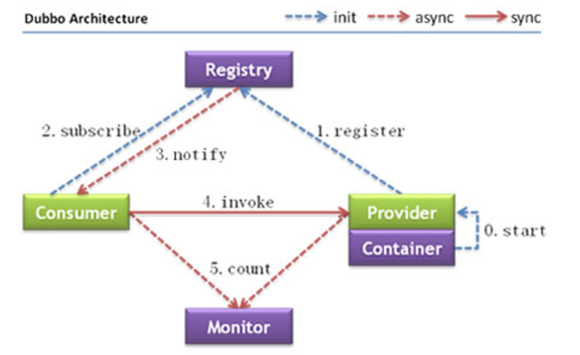

阅读目录
一、前言
首先本文仅作为笔者在做一些调研之后的总结，仅提供思路，不提供源码，所以如果是想直接冲着源码来的，可以跳过此文。如果后续有机会将项目开源出来，会第一时间写新文章讲解实线细节。
在分布式系统的构建之中，服务治理是类似血液一样的存在，一个好的服务治理平台可以大大降低协作开发的成本和整体的版本迭代效率。在服务治理之前，简单粗暴的RPC调用使用的点对点方式，完全通过人为进行配置操作决定，运维成本高（每次布置1套新的环境需要改一堆配置文件的IP），还容易出错，且整个系统运行期间的服务稳定性也无法很好的感知。
关于服务治理网上相关的信息也是非常多，但是如何基于每个公司的当下情况去选择最合适的方案落地，是我们每个架构师或者Leader需要考虑的问题。所谓工欲善其事必先利其器，做好了服务治理，那么SOA化的推进会事半功倍，已经从技术层面天然支持了程序的水平扩展。.Neter社区下成熟的服务治理平台缺乏，我想这也是每个基于.Net技术栈公司面临的问题。2016年微软正式推出了Service Fabric，并于17年开源（https://github.com/Azure/service-fabric），但是相对Java社区常见的解决方案，这个还未得到大规模验证，所以还需谨慎对待。所以本文就通过对不同的成熟解决方案来分析，提炼出一些核心的通用准则，来分析自建一个服务治理框架需要做些什么。欢迎大家拍砖。
二、成熟的解决方案
查阅的一些资料，目前的业界一些比较成熟的解决方案如下：
名称 | 所属公司 | 是否开源 | 资料文档 | 备注 |
Dubbo | 阿里巴巴 | 是 | 多 | |
HSF | 阿里巴巴 | 否 | 中 | 目前已作为阿里云产品EDAS其中的套件开放使用 |
Tars | 腾讯 | 是 | 中 | 已作为腾讯云应用框架对外提供使用 |
JSF | 京东 | 否 | 少 | |
Linkerd | CNCF | 是 | 少 | 原型是Twitter所构建的一个基于scala的可扩展RPC系统Finagle |
Motan | 新浪微博 | 是 | 中 | |
istio | 谷歌、IBM、Lyft | 是 | 少 |
相关资料文档较为丰富的只有一个Dubbo。下面先罗列一下这些解决方案的架构设计（点击图片可跳转到图片出处）。
1.阿里 - Dubbo

2.阿里 - HSF


3.腾讯 - Tars


4.JSF


5.CNCF - Linkerd


6.新浪 - Motan


7.istio


大家可以看到，大部分（Linkerd除外、MSEC没找到架构图）方案的设计风格非常相似，都是通过库的方式在调用客户端做的服务发现。那么除了实际的RPC调用之外，主要多了这3个动作：注册、订阅、变更下发。除了这3个核心动作之外，其它的辅助操作还有统计上报、鉴权等等，这也是我们搭建一个服务治理框架需要实现的功能。从MVP的角度来说，注册、订阅、变更下发是最基础的核心功能。
三、剖析
首先前文里也说了，引入服务治理是为了对整体的RPC调用进行集中化管理。对我们来说其核心价值在于，减少重复劳动、避免手动配置物理文件产生的问题、降低开发人员的技术运用成本。下面针对其中的功能点进行分别讲解。
服务的自动注册：这是一个服务治理框架的基础功能。大家运用WCF的时候应该感受更加明显，我们要配置一个WCF服务端的时候需要在config文件中做很多配置，甚至大部分公司其实配置都是一模一样的到处复制黏贴，整个这个过程其实是价值较低的重复性劳动。解决这个问题需要通过动态的感知到服务端的地址信息，然后针对该地址信息进行自动化配置或者模板化配置，让其快速可用。那么这些额外的信息保存在哪，就需要引入一个注册中心的概念来进行集中化管理。
客户端的自动发现：当我们在config文件中指定具体的IP和端口来定义远程服务的地址，或者直接在程序里硬编码远程服务地址时，本身就是一个端到端的访问方式。无法灵活的在程序运行过程中去增加或减少后端的服务节点。解决这个问题需要和服务注册的实现方式配套。还可以针对于不同类型的应用制定一些负载均衡的策略进行切换。
变更下发：客户端的自动发现就依赖于此下发的数据，需要及时把提供服务的节点信息变化下发到各个客户端。它面向的场景如：当我们进行一个发布的时候，先将需要发布的节点从负载均衡列表中移除，然后再进行更新，最后再添加到负载均衡列表中。这个时候避免了访问到正在发布中的程序。当然这点也可以基于状态检测模块去做，这样可以对服务节点的健康状态感知能力得到更好的加强。
四、实战
下面我们剖析一下这2个核心功能的实现。
1.注册、订阅通过上面可以看到，主流的注册、订阅的实现需要引入一个数据集中化的节点。如果我们想要自己建立这个节点程序，那么需要考虑高可用问题。如果图省事，可以引入一个分布式协调器（也可以理解为一个配置中心）来实现，如：ZooKeeper、Consul等。
2.变更下发如果上面的第一点选择自研，那么需要考虑通知下发的问题，一般可以通过tcp建立长连接来进行主动推送。如果使用Zookeeper的话，首先我们需要分别给每一个服务的提供方定义一个统一的目录，作为各个服务的根节点。然后让该服务的每个独立的进程在这个根节点下Create一个临时节点。这样，我们的调用方只需要watch根节点下的子节点变化，即可实现了后端各个服务提供节点的移除和新增。但是需要注意的是Zookeeper在连接断了之后，不会马上移除临时数据，只有当SESSIONEXPIRED之后，才会把这个会话建立的临时数据移除。因此，我们需要谨慎的设置Session_TimeOut。
五、服务治理的扩展
在企业中，我们可以针对服务治理做更多的扩展。比如：
1.基于版本号的服务管理，可以用于灰度发布。
2.请求的复制回放，用于模拟真实的流量进行压测。
3.给请求打标签用于实时的在线压测。
4.更灵活的负载均衡和路由策略。
5.内置的熔断机制，避免整个分布式系统产生雪崩效应。
作者：Zachary_Fan